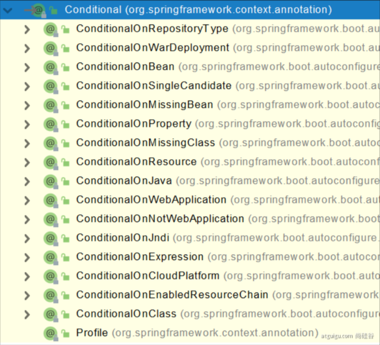
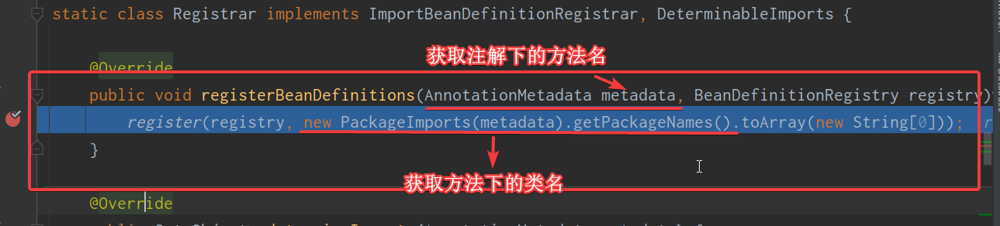
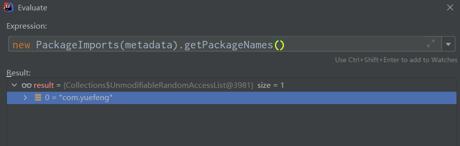
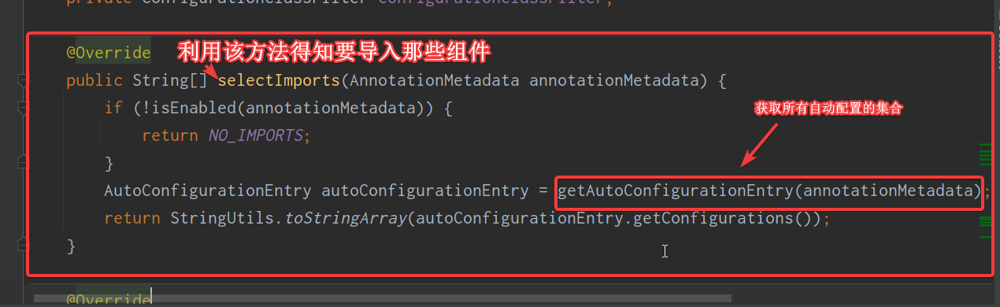

SpringBoot-基础入门
Springboot2入门
hello Boot
需求：浏览发送/hello请求，响应 Hello，Spring Boot 2
- 创建一个Maven项目
- 引入依赖
1 | <parent> |
- 编写启动类
1 |
|
4.在浏览器访问

简化部署
- 导入配置
1 | <build> |
2.clean 和 package

3.本地查看jar包

自动配置
自动配好SpringMVC
- 引入SpringMVC全套组件
- 自动配好SpringMVC常用组件（功能）
自动配好Web常见功能，如：字符编码问题
SpringBoot帮我们配置好了所有web开发的常见场景
默认的扫描包结构
- 和启动类所在包及其下面的所有子包里面的组件都会被默认扫描进来
想要改变扫描路
- @SpringBootApplication(scanBasePackages=“com.yuefeng”)
- 或者@ComponentScan 指定扫描路径
@SpringBootApplication 等于
@SpringBootConfiguration
@EnableAutoConfiguration
@ComponentScan(“com.atguigu.boot”)
容器功能
组件添加
@Configuration
1、配置类里面使用@Bean标注在方法上给容器注册组件，默认也是单实例的
2、配置类本身也是组件
3、proxyBeanMethods：代理bean的方法
@Bean、@Component、@Controller、@Service、@Repository
@ComponentScan、@Import
@Conditional

原生配置文件引入
@ImportResource
@ImportResource注解用于导入Spring的配置文件，让配置文件里面的内容生效；(就是以前写的springmvc.xml、applicationContext.xml)
Spring Boot里面没有Spring的配置文件，我们自己编写的配置文件，也不能自动识别；
想让Spring的配置文件生效，加载进来；@ImportResource标注在一个配置类上。
注意！这个注解是放在主入口函数的类上，或者配置类上
配置绑定
如何使用Java读取到properties文件中的内容，并且把它封装到JavaBean中，以供随时使用；
@ConfigurationProperties
1 |
|
- 开启Car配置绑定功能
- 需要@Component将Car放入容器
@EnableConfigurationProperties + @ConfigurationProperties
1 |
|
1 |
|
- 开启Car配置绑定功能
- 把这个Car这个组件自动注册到容器中
自动配置原理入门
引导加载自动配置类
@SpringBootApplication 相当于
@SpringBootConfiguration
@EnableAutoConfiguration
@ComponentScan
@SpringBootConfiguration
@Configuration。代表当前是一个配置类
@ComponentScan
指定扫描哪些，Spring注解；
@EnableAutoConfiguration
@EnableAutoConfiguration
@AutoConfigurationPackage
@Import(AutoConfigurationImportSelector.class)
AutoConfigurationPackage
自动配置包
AutoConfigurationPackage
@Import(AutoConfigurationPackages.Registrar.class) }
利用Registrar给容器中导入一系列组件
将指定的一个包下的所有组件导入进来？MainApplication 所在包下。


获取了 com.yuefeng 的包名
@Import(AutoConfigurationImportSelector.class)

利用getAutoConfigurationEntry(annotationMetadata);给容器中批量导入一些组件
调用List
configurations = getCandidateConfigurations(annotationMetadata, attributes)获取到所有需要导入到容器中的配置类 利用工厂加载 Map<String, List
> loadSpringFactories(@Nullable ClassLoader classLoader)；得到所有的组件 从META-INF/spring.factories位置来加载一个文件。
默认扫描我们当前系统里面所有META-INF/spring.factories位置的文件
spring-boot-autoconfigure-2.3.4.RELEASE.jar包里面也有META-INF/spring.factories
按需开启自动配置项
1.所有自动配置启动的时候默认全部加载.
2.按照条件装配规则（@Conditional），最终会按需配置。
修改默认配置
- SpringBoot默认会在底层配好所有的组件。但是如果用户自己配置了以用户的优先
@ConditionalOnMissingBean
它是修饰bean的一个注解，主要实现的是，当你的bean被注册之后，如果而注册相同类型的bean，就不会成功，它会保证你的bean只有一个，即你的实例只有一个，当你注册多个相同的bean时，会出现异常，以此来告诉开发人员。
1 |
|
总结：
SpringBoot先加载所有的自动配置类 xxxxxAutoConfiguration
每个自动配置类按照条件进行生效，默认都会绑定配置文件指定的值。xxxxProperties里面拿。xxxProperties和配置文件进行了绑定
生效的配置类就会给容器中装配很多组件
只要容器中有这些组件，相当于这些功能就有了
定制化配置
- 用户直接自己@Bean替换底层的组件
- 用户去看这个组件是获取的配置文件什么值就去修改。
xxxxxAutoConfiguration —> 组件 —> xxxxProperties里面拿值 —-> application.properties